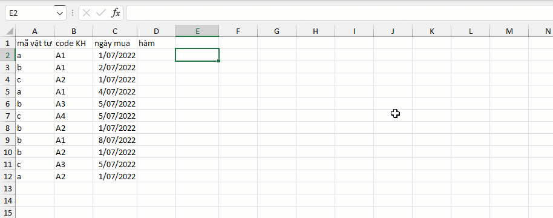
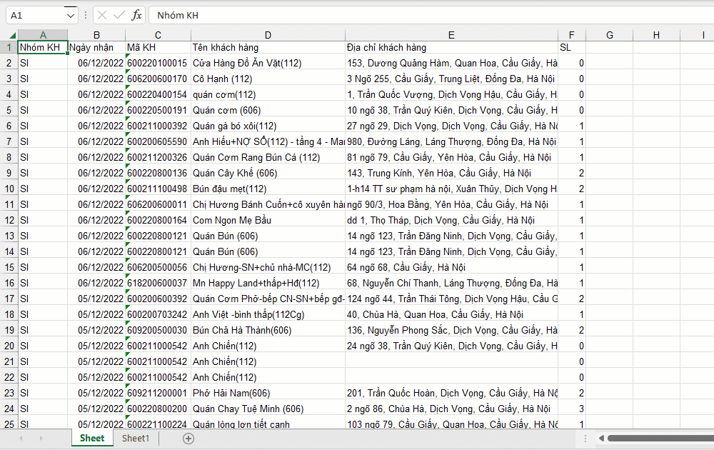
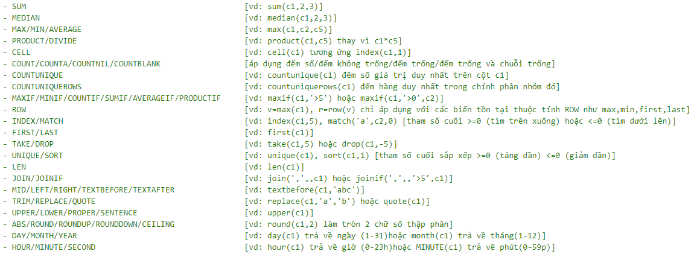

VD1: Thống kê các loại mã vật tư được mua bởi mỗi khách hàng theo từng tháng.
VD2: Cho số liệu thống kê tập khách hàng từ tháng 8 đến tháng 12 của một cửa hàng gas HN.
Yêu cầu: thống kê số lượng bình gas tiêu thụ bởi từng khách hàng theo từng tháng.

Related function
XGROUP Hàm mở rộng của GROUP. (hỗ trợ các hàm nâng cao).
Return to Home